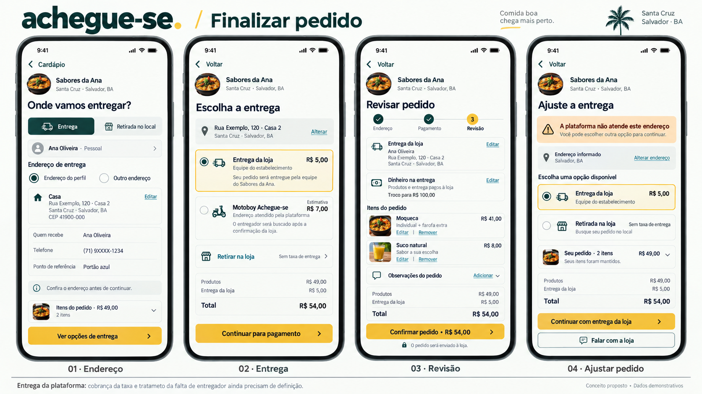

Recebimento, endereço, pagamento e revisão. Conciliar com três modalidades de entrega; frete não pode ser somado duas vezes. Pagamentos dependem do contrato operacional.
Documento da página · Registro da revisão
